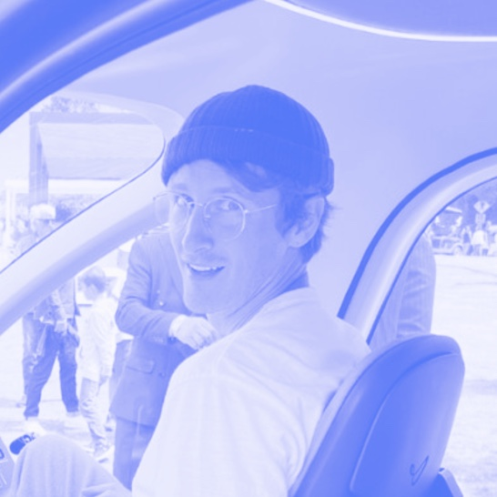
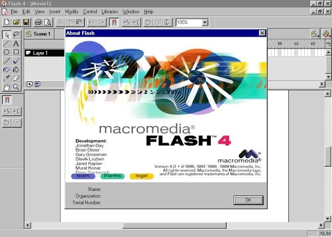
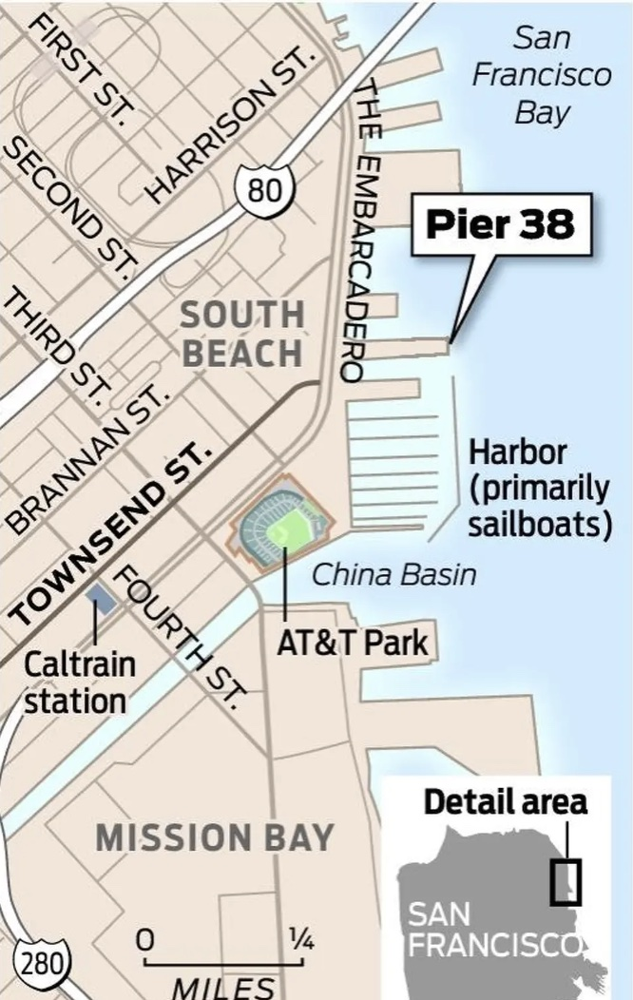
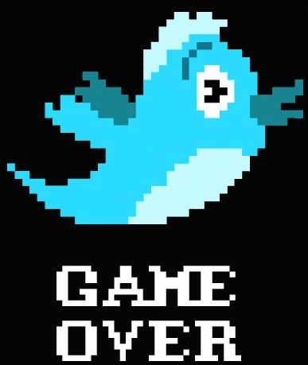
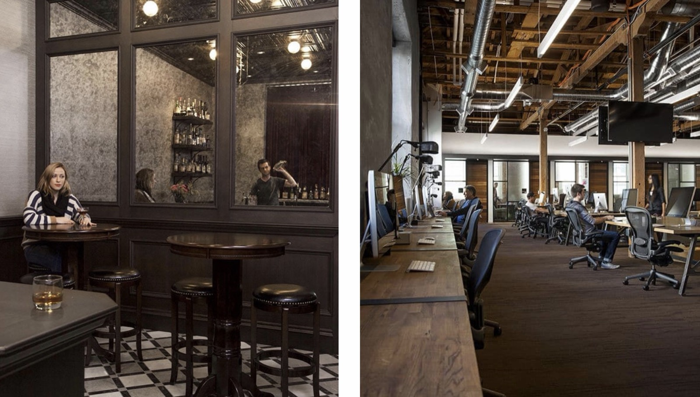
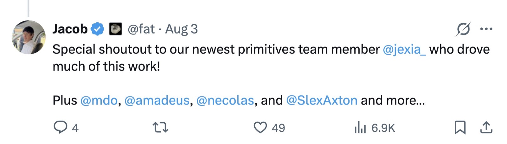
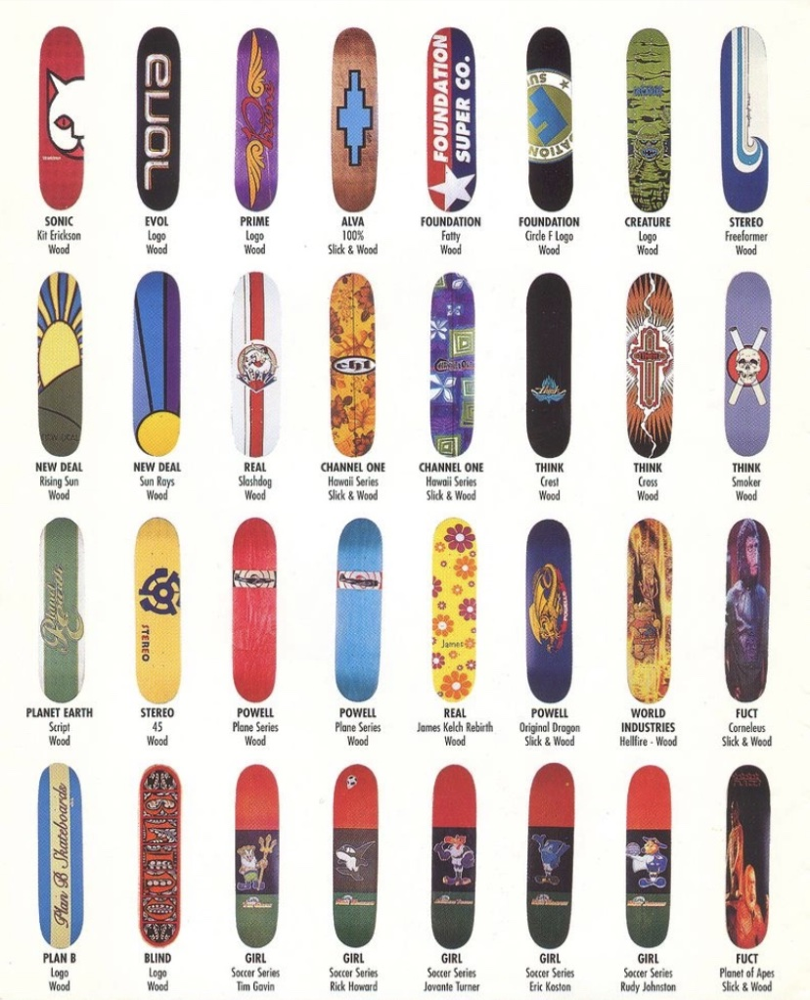
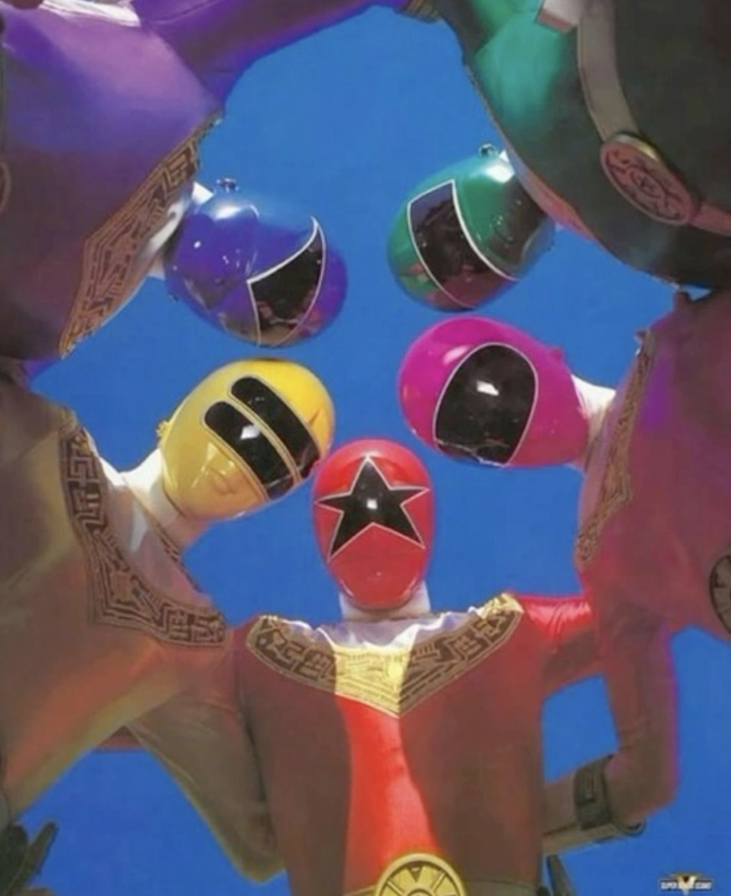

An interview with Jacob Thornton,
Founder of Pierre Computer Company
Virtual computers for agents, chrome blobs, and MTV
Jacob Thornton learned to code at 13 because he wanted to make animations with his friends. He mowed every yard he could, saved up, and bought Macromedia Flash. His parents didn’t want him to go to art school, so he majored in literature and planned a life in academia. In 2008, however, he landed in SF, wandered into early Twitter, and co-created Bootstrap, the open-source framework that still runs on one in seven websites on the internet. He then went to Medium, sold a company to Coinbase, and led product infrastructure there for the better part of a decade. He also owns a bagel shop.
Now he’s building Pierre Computer Company, the building blocks of the computers that agents will use to do work. But Pierre is as much a brand and culture project as an infrastructure one. Jacob believes brand is the most important thing you can be doing in 2026, and his references run from MTV and skateboard brands to Godard films and the magazine racks at Heath newsstand.
We talked about why MVP culture is cringe, how to find and hire obsessives, why the best creative work at Pierre starts in iMessage threads, and the real reason the company is named Pierre… sort of.
You have such a diverse background across humanities and tech. What were the key moments that brought you to founding Pierre?
I was always resistant to the idea of being an engineer. I really wanted to go to animation school. When I was a kid, I mowed every yard on planet earth, saved up money, and bought Macromedia Flash. As a 13 year old, I taught myself this so I could make animations with my friends. So this was how I learned to code. My parents didn’t want me to go to art school, and so I was like, “Ha, I’ll be a literature major.”

After school, I thought I would be a professor. This was 2008. I didn’t even really know what startups were, but I moved to SF and started working at a startup in this place called Pier 38. It was this crazy co-working space that all of these iconic companies came out of: Twilio, Instagram, Appjet (which became Google wave). The company I had joined was building email for kids. Within the first few months, we pivoted to power user email, which felt lame to me. But the nice side effect was that a startup called Twitter launched around the same time, and they were doing all this brand stuff that I was obsessed with.

So Twitter’s branding hooked you before the product did?
100%. I had randomly built a side project too, taking tweets and expanding media inside of them physically. Someone from Twitter saw it and reached out to me saying, “This is so cool, you have to come work here.” They coaxed me to come into the office and it was transformational. Within two days I was like, “What am I doing, I gotta join.”
They created a team for me and my friend Jason called “internal tools,” but we just did a bunch of art projects and installations for Twitter. We would buy massive screens and do fire hose visualizations, Space Invaders with Lady Gaga versus Justin Bieber. My entire Twitter days really imprinted on me… what is a brand, and what is a company culture that is very, very special.

When did you decide Pierre was what you were going to do?
I met a bunch of people at Twitter that I’m still really close with today. In fact, a third of Pierre is early Twitter people. And importantly, I connected with this guy Mark Otto. He and I created this thing called Bootstrap on the side, nights and weekends. That became a whole open source thing, and then Mark went to GitHub and led design there for a decade. I was spending a ton of time in the GitHub office. Early GitHub was basically the coolest company of all time. Everyone was extremely punk rock in a way that was so romantic. They had secret hidden bars in the office. If you think of GitHub today, they’re going down all the time and people are completely dunking on them. A lot of these services in the past, like Twitter, went down constantly but turned it into a real brand moment that people liked.

Fast forward. I go to Medium, I leave, I start a company, I sell it to Coinbase, leading product infrastructure there for six or seven years. Then I left. At one point I was grabbing beers with Mark and Ted, and we were just talking about GitHub and how bad it was. If there was a company to trick ourselves into working again, it would be working on whatever that is. A lot of it, at least for me, was about trying to create both the culture internally and an engineering brand that felt weird, special, and relatable… in the same way we felt about Twitter when it was early.
Can you tell us more about Pierre - what are you building?
Our company is Pierre Computer Company. We’re creating the building blocks of computers that agents will use to do work. The software development life cycle for the longest time is: I’m going to work locally on my computer, push up to a remote git forge, review it, CI runs through a bunch of checks, then I ship it off, rinse and repeat. Agents work very differently. They work in sandboxes, they push up to distributed forges, and they’re running in a tight loop. We started with storage and coding, but we’re working on a bunch of horizontal things on top of storage, ultimately toward building these virtual computers for agents.
Why is this important to you?
In a world where everyone is questioning if engineering is going to disappear, I want to be representative of the best parts of engineering, and be a thing that people hold up as, “Oh no, this thing exists.”
Back to mimicking the culture of early Twitter - how do you build culture at Pierre?
A lot of it is finding the people that are really special and then giving them space to be very special. Fun is such a corny word, but if I go through any stretch where I’m like, “I’m not having fun,” then I know that will start going through everything we’re doing. The brand, the products we’re building, the risks we’re taking - will all become lamer. We make fun of MVP culture a lot internally. The, “This works great, ship it,” type energy is cringe to us. Instead we say, “What if a project that might have been scoped to take two weeks… what if you give some of the best engineers in the world five weeks to work on it? What happens?”

Why is MVP culture cringe?
What our business does today is based around this belief that agentic work is going to be constrained by the limitations of infrastructure. If you take github.com for example, you can push one commit per 1.5 seconds per repo. That’s a pretty reasonable upper bound for humans ripping code together on a single repository. So you start to say, “What if we have more concurrency or more throughput, and we have agent swarms, how fast can they start pushing work, and what is the upper bound of work?” There’s a lot of unexplored space, and once you push beyond MVP culture it gets radically creative, because the stuff you start doing is perverting standard technology systems and ways of thinking about architectures. You’re pushing beyond an obvious limit. So one big thing we hire for is, what are the things people are absolute obsessives about, to the point where it’s borderline uncomfortable?
What are you obsessive about, or what are some examples of things where the team is obsessed?
Oh my, so much. My father was a mechanic, and I think we have eight cars and five motorcycles. I’ve built them from scratch. We have a number of channels in our Slack… There’s a sky mall health one, where we talk about peptides. We have some people that are out of their mind coffee and espresso nerds. Someone on our team is really into helicopter flight simulators and plays them every Sunday for nine hours. Liking video games, sure, but then what does it mean to play World War Two flight simulators every weekend? There’s a whole other rung of deepness to immerse yourself in.
Pivoting to brand. Where does the creative energy at Pierre come from?
A lot of the best things that come out of Pierre come from a bunch of different iMessage threads. “Have you seen this, I’m watching this David Lynch thing, this new skate video,” etc. I’m texting my mom, a handful of friends from different companies and different positions - Nick and Devin, the Stripe Press team, are some of my favorite creative people.
My favorite brand of all time is MTV, so I think about that. I also think a lot about skateboard culture - pretty much every skate brand has the exact same skateboard. If you pulled up a Baker board and a Birdhouse board and Antihero, they’re basically all the same board. But the whole factory of skateboarding is just brand culture. That’s it. And people are psycho allegiant to their different brands. “I only skate Hockey,” or “I only skate Baker or Enjoi,” because of those brands.

A thing those brands do, and that early MTV did a lot, is they take their word marks and constantly reinvent them. We’re going to have some little commonality so you can squint and register an M and a TV, but now it’s claymation, now it’s a crazy piece of paper on fire, now it’s a drawing, now it’s very Swiss design. It’s very anti-brand guidelines. It’s also not really something I’ve seen a tech company be able to pull off. I want our brand to get to that place where we are playing with it so insanely much that people just associate our brand with play. I have a lot of tin foil hat opinions, but brand is very, very, very important. In fact I think it’s the most important thing that you can be doing in 2026.
Where did the chrome blobs come from?
We use Cosmos, and when we’re doing design exercises we’ll go through and figure out different aesthetics, different types of visual explorations. A long time ago there was this famous interview at Twitter where this guy said, “Oh, I did this thing on the metal,” and everyone thought it was extremely funny at the time. Metal has become associated with planet scale, performance, low level engineering. We wanted to play with that motif, which is why we have the chrome blobs. I was also thinking a lot about early engineering print, and trying to mash those together in my head. Typically I’m having conversations with people and then get obsessed with a specific idea. “What would it look like to do a metal website? What does that even mean?” Then I’m combing through something like Cosmos and thinking about what digital artists and other creatives are doing in that space that speaks to me. And then how can I combine discrete versions of those things into a cohesive visual treatment.
How do you collaborate with other creatives?
We built our last website with Nick and Devin, and we did these Afterimage videos most recently. It started with me fixating on the monsters from Power Rangers. I thought there’s some version of analogness that would be cool to be associated with, in a hyper tech industry doing a super technical thing. It feels special, the anti slop, anti vibe coded way of making a video. We shot it on 35 millimeter, we developed it in the same place that The Odyssey was developed. We could have done an AI blob head or something digital, but we were like, “No, let’s find someone to sculpt a giant styrofoam head and see if they’ll wear it in a bunch of different scenarios.”

It’s really about saying, “I have these weird ideas and here’s some rough visual language,” then seeing if there’s a creative who vibes with what you’re putting out there, and giving them ultimate control. It’s like going to get a haircut and being like, “Look, I want something really cool, these five things are kind of interesting, but really I just want you to flex.” Typically we reach out to specific creatives. We were working on some videos that were PlayStation 1 level graphics and I found this 3D artist on Instagram and contracted him to build some stuff.
Is there a tool that matters most to your process?
It’s not really so much a tool. To me, the coolest stuff is cultural references. Reading books, watching film, devouring art. Sci-Fi Fantasy is a really cool skateboarding brand. There are publication brands like Semiotext(e), or Butler, that still do really neat stuff. Our office happens to be right next to Heath newsstand in the Mission. If you come to our office, we probably have 5000 magazines, zines, art book things, because I buy every magazine from there. Anytime I go to Tokyo or other places that have magazine culture, my whole luggage is just filled with art magazines. Every table surface is covered in either polaroids from random people visiting the office or art books.
Rapid fire
Heath newsstand. I just go in there, put music on, spend an hour, buy 10 magazines, get a cup of coffee, and go page by page through all of them. Digital to me is lagging so far behind print. There’s just so much to be inspired by in print graphic design.
The whole thing with Pierre is that we just lie to people every time they ask us why. There’s really no one reason. But there’s this movie I love, Pierrot le Fou, this Godard film. So one of the reasons I sometimes give is that. It’s a banger.